Utils
Contents
Utils#
Some helpful utilities when dealing with the IASI data.
import sys, os
from pyprojroot import here
# spyder up to find the root
import sys, os
sys.path.append("/home/emmanuel/code/isp_data")
sys.path.append("/home/emmanuel/code/gp_model_zoo/code/numpyro")
import jax.numpy as jnp
import numpy as np
import xarray as xr
#
from isp_data.iasi.utils import get_orbits, get_radiance_covariance, get_clean_features
from isp_data.iasi.load_data import load_radiances
# MATPLOTLIB Settings
import matplotlib as mpl
import matplotlib.pyplot as plt
%matplotlib inline
%config InlineBackend.figure_format = 'retina'
# SEABORN SETTINGS
from tqdm.notebook import tqdm
import seaborn as sns
sns.set_context(context='talk',font_scale=0.7)
%load_ext autoreload
%autoreload 2
Get All Orbits#
# ==========================
# INITIALIZE LOGGER
# ==========================
import wandb
wandb_logger = wandb.init(project="egp_1_1", entity="ipl_uv")
Failed to detect the name of this notebook, you can set it manually with the WANDB_NOTEBOOK_NAME environment variable to enable code saving.
wandb: Currently logged in as: ml4floods (use `wandb login --relogin` to force relogin)
wandb: wandb version 0.10.32 is available! To upgrade, please run:
wandb: $ pip install wandb --upgrade
Tracking run with wandb version 0.10.30
Syncing run electric-serenity-23 to Weights & Biases (Documentation).
Project page: https://wandb.ai/ipl_uv/egp_1_1
Run page: https://wandb.ai/ipl_uv/egp_1_1/runs/5webp9li
Run data is saved locally in
Syncing run electric-serenity-23 to Weights & Biases (Documentation).
Project page: https://wandb.ai/ipl_uv/egp_1_1
Run page: https://wandb.ai/ipl_uv/egp_1_1/runs/5webp9li
Run data is saved locally in
/home/emmanuel/documents/research_notebook/research_notebook/content/notes/egps/notebooks/wandb/run-20210625_202751-5webp9liwandb.config.model = "sparse"
wandb.config.exp = "iasi"
wandb.config.n_train = 5_000
wandb.config.n_components = 50
orbits = get_orbits()
orbits.head(10)
| IASI Dates | |
|---|---|
| 0 | 20130717031453 |
| 1 | 20130717045652 |
| 2 | 20130717063852 |
| 3 | 20130717082052 |
| 4 | 20130717132052 |
| 5 | 20130717150252 |
| 6 | 20130717164156 |
| 7 | 20130717182356 |
| 8 | 20130717214452 |
| 9 | 20130731233555 |
Get Orbits for a specific Data#
day = ['20131001'] # "20140117", "20140101", "20131001"
wandb.config.day = day[0]
orbits = get_orbits(days=day)
orbits
| IASI Dates | |
|---|---|
| 0 | 20131001015955 |
| 1 | 20131001034155 |
| 2 | 20131001052355 |
| 3 | 20131001070555 |
| 4 | 20131001084755 |
| 5 | 20131001102955 |
| 6 | 20131001120859 |
| 7 | 20131001135058 |
| 8 | 20131001152954 |
| 9 | 20131001170858 |
| 10 | 20131001185058 |
| 11 | 20131001202954 |
| 12 | 20131001221154 |
Reflectance Errors#
err = get_radiance_covariance(clean_features=True)
fig, ax = plt.subplots()
ax.plot(err)
ax.set(xlabel="Reflectances", ylabel="Variance")
plt.show()
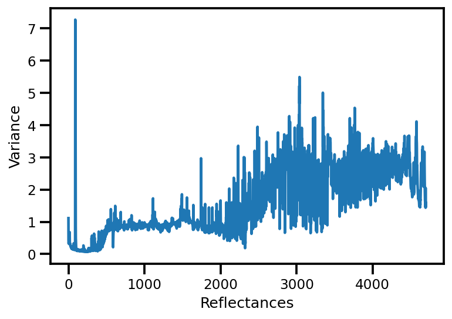
input_cov = np.diag(err)
fig, ax = plt.subplots()
img = ax.imshow(np.log(1+input_cov), cmap="Reds")
plt.colorbar(img)
plt.show()
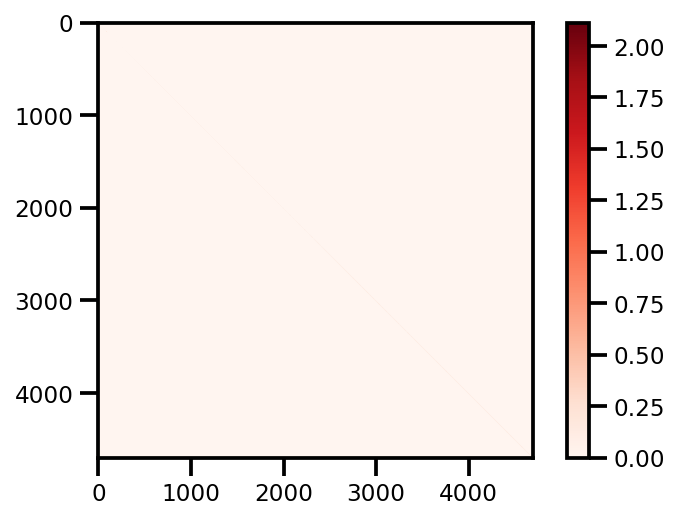
n_train = 10_000
n_per_orbit = n_train//len(orbits)
from isp_data.iasi.load_data import load_coordinates
from isp_data.iasi.load_data import load_labels
rng = np.random.RandomState(123)
seeds = rng.randint(low=0, high=100_000, size=len(orbits.values))
%%time
import tqdm
import numpy as np
radiances = []
temperatures = []
pressures = []
latitudes = []
longitudes = []
with tqdm.tqdm(list(zip(orbits.values, seeds))) as pbar:
for iorbit, iseed in pbar:
pbar.set_description(f"Orbit: {iorbit[0]} | Loading Radiances...")
dat = load_radiances(orbit=iorbit[0], subsample=n_per_orbit, clean=True, random_state=iseed)
radiances.append(dat)
pbar.set_description(f"Orbit: {iorbit[0]} | Loading Pressures...")
dat = load_labels(orbit=iorbit[0], label="hPa", subsample=n_per_orbit, random_state=iseed)
pressures.append(dat)
pbar.set_description(f"Orbit: {iorbit[0]} | Loading Temperatures...")
dat = load_labels(orbit=iorbit[0], label="T", subsample=n_per_orbit, random_state=iseed)
temperatures.append(dat)
pbar.set_description(f"Orbit: {iorbit[0]} | Loading Coordinates...")
lon, lat = load_coordinates(orbit=iorbit[0], subsample=n_per_orbit, random_state=iseed)
latitudes.append(lat)
longitudes.append(lon)
radiances = np.concatenate(radiances, axis=0)
temperatures = np.concatenate(temperatures, axis=0)
pressures = np.concatenate(pressures, axis=0)
latitudes = np.concatenate(latitudes, axis=0)
longitudes = np.concatenate(longitudes, axis=0)
Orbit: 20131001221154 | Loading Coordinates...: 100%|██████████| 13/13 [00:28<00:00, 2.22s/it]
CPU times: user 28.5 s, sys: 531 ms, total: 29 s
Wall time: 29 s
def create_xr_from_df(labels, lats, lons, time=None):
labels = labels.squeeze()
lats = lats.squeeze()
lons = lons.squeeze()
if time:
# create dataframe
df = pd.DataFrame({"latitude": lats, "longitude": lons, "time": time, "labels": labels})
# set index
df = df.set_index(["latitude", "longitude", "time"])
else:
# create dataframe
df = pd.DataFrame({"latitude": lats, "longitude": lons, "labels": labels})
# set index
df = df.set_index(["latitude", "longitude"])
# drop duplicates
df = df.groupby(level=df.index.names).mean()
# create xarray
xr_ds = df.to_xarray()
return xr_ds
import pandas as pd
dat_xr = create_xr_from_df(temperatures[:, -1], latitudes, longitudes)
dat_xr.labels.plot(cmap="RdBu_r")
<matplotlib.collections.QuadMesh at 0x7f1f098c7eb0>
y = temperatures[:, -1]
import corner
figure = corner.corner(radiances[:, :10])
WARNING:root:Too few points to create valid contours
WARNING:root:Too few points to create valid contours
WARNING:root:Too few points to create valid contours
WARNING:root:Too few points to create valid contours
WARNING:root:Too few points to create valid contours
WARNING:root:Too few points to create valid contours
WARNING:root:Too few points to create valid contours
WARNING:root:Too few points to create valid contours
WARNING:root:Too few points to create valid contours
PreProcessing#
Labels - Standardization#
from sklearn.preprocessing import StandardScaler
y_transformer = StandardScaler()
# radiances_scaled = x_transformer.fit_transform(radiances)
y_scaled = y_transformer.fit_transform(y.reshape(-1, 1))
# import corner
# figure = corner.corner(radiances_scaled[:, :10])
Inputs - PCA Transformation#
from sklearn.decomposition import PCA
%%time
n_components = wandb.config.n_components
pca_seed = 123
pca_scaler = PCA(n_components=10, random_state=pca_seed, whiten=True).fit(radiances)
radiances_pca = pca_scaler.transform(radiances)
CPU times: user 12.6 s, sys: 8.17 s, total: 20.8 s
Wall time: 1.24 s
fig, ax = plt.subplots()
ax.plot(np.cumsum(pca_scaler.explained_variance_ratio_))
plt.show()
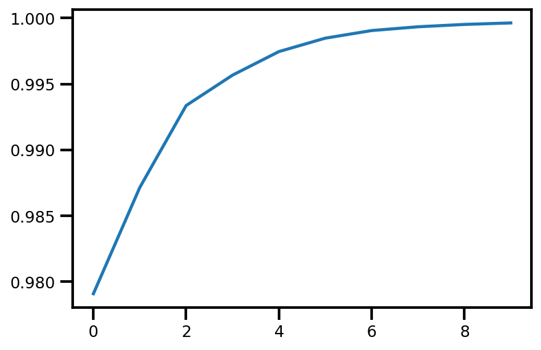
import corner
figure = corner.corner(radiances_pca[:, :10])
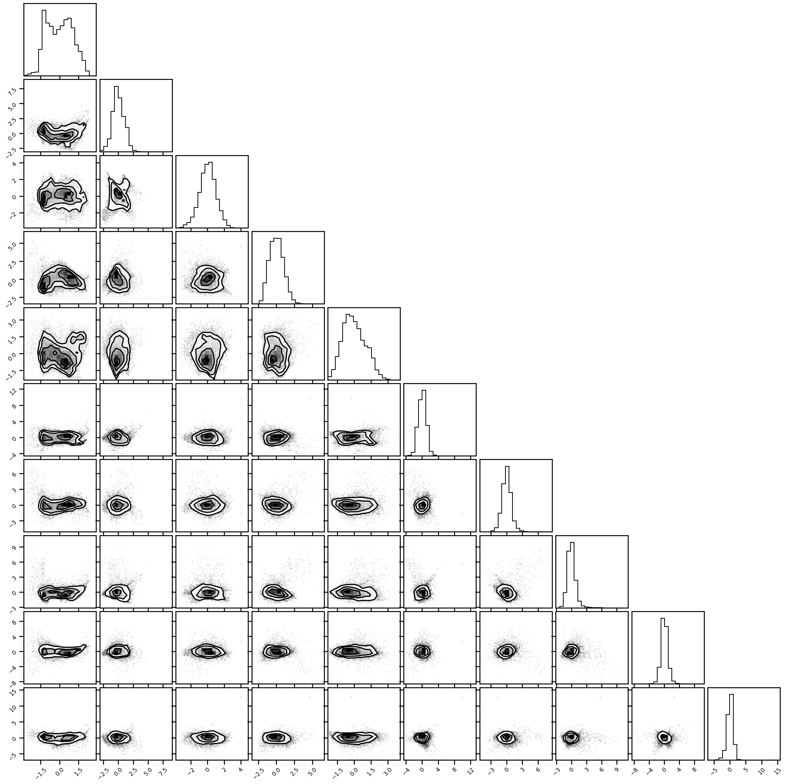
Transform Input Covariance#
ig, ax = plt.subplots()
img = ax.imshow(input_cov, cmap="Reds", vmax=1.0)
plt.colorbar(img, )
plt.gcf()
wandb.log({f"input_cov": wandb.Image(plt)})
plt.show()
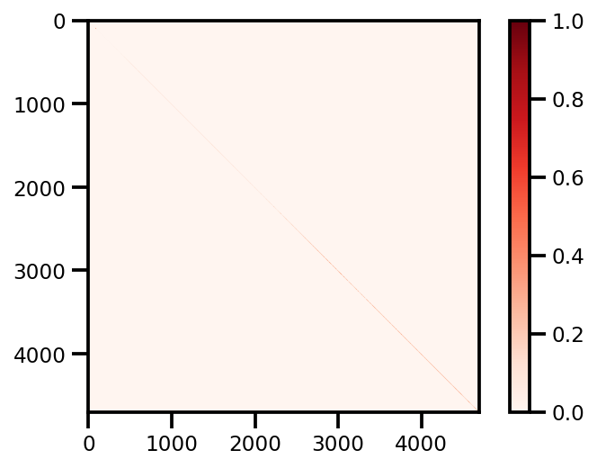
def transform_input_cov(cov, pca_scaler):
cov = pca_scaler.components_ @ cov @ pca_scaler.components_.T
if pca_scaler.whiten:
cov /= np.sqrt(pca_scaler.explained_variance_)
return cov
input_cov_scaled = transform_input_cov(jnp.sqrt(input_cov), pca_scaler)
# assert input_cov_scaled.shape[0] == n_components
# assert input_cov_scaled.shape[1] == n_components
fig, ax = plt.subplots()
img = ax.imshow(input_cov_scaled, cmap="Reds")
plt.colorbar(img)
plt.gcf()
wandb.log({f"input_cov_scaled": wandb.Image(plt)})
plt.show()
WARNING:absl:No GPU/TPU found, falling back to CPU. (Set TF_CPP_MIN_LOG_LEVEL=0 and rerun for more info.)
def rescale_x_data(Xtest):
# inverse PCA transform
Xtest = pca_scaler.transform(Xtest)
return Xtest
def rescale_y_data(ytest):
ytest = ytest[:, -1].reshape(-1, 1)
return y_transformer.transform(ytest)
Model#
import chex
import jax
import jax.numpy as jnp
from chex import Array
from src.utils import identity_matrix, add_to_diagonal
from src.kernels import RBF
X_scaled = radiances_pca
n_features = X_scaled.shape[1]
n_length_scales = X_scaled.shape[1]
rbf_kernel = RBF(length_scale=jnp.ones(1), variance=1.0)
model = "sparse"
# wandb.config.model = model
# NUMPYRO SETTINGS
import numpyro
import numpyro.distributions as dist
from numpyro.infer.autoguide import AutoDiagonalNormal
from numpyro.infer import SVI, Trace_ELBO
from src.utils import init_inducing_subsample, init_inducing_kmeans
from src.sparse import init_default_sgp_model
from src.exact import init_default_gp_model
jitter = 1e-5
inference = "map"
n_inducing = 300
# wandb.config.jitter = jitter
# wandb.config.inference = inference
# wandb.config.n_inducing = n_inducing
# wandb.config.n_length_scales = n_length_scales
if model == "exact":
numpyro_model = init_default_gp_model(
n_features=n_length_scales, inference=inference, jitter=jitter
)
elif model == "sparse":
numpyro_model = init_default_sgp_model(
X_scaled[:5_000],
n_features=n_length_scales,
inference=inference,
n_inducing=n_inducing,
jitter=jitter,
)
else:
raise ValueError(f"Unrecognized model: {model}")
def empty_guide(X, y):
pass
# model_info, potential_fn, *_ = numpyro.infer.util.initialize_model(key, numpyro_model, model_args=(X_scaled[:100], y_scaled[:100]))
# NUMPYRO SETTINGS
with numpyro.handlers.seed(rng_seed=123):
t = numpyro_model(X_scaled[:100], y_scaled[:100])
assert t.shape == y_scaled[:100].shape
Inference#
from numpyro.infer.autoguide import (
AutoDelta,
AutoMultivariateNormal,
AutoDiagonalNormal,
)
# ===================
# Model
# ===================
# GP model
# delta guide - basically deterministic
if inference == "map":
guide = AutoDelta(numpyro_model)
elif inference == "vi_mf":
guide = AutoDiagonalNormal(numpyro_model)
elif inference == "vi_full":
guide = AutoMultivariateNormal(numpyro_model)
elif inference == "mll":
def empty_guide(X, y):
pass
guide = empty_guide
else:
raise ValueError(f"Unrecognized inference scheme: {inference}")
Training#
# reproducibility
rng_key = jax.random.PRNGKey(0)
# # Setup
# wandb.config.step_size = 0.01
# wandb.config.train_seed = 42
# wandb.config.iterations = 2_500
# Setup
optimizer = numpyro.optim.Adam(step_size=0.1)
# optimizer = numpyro.optim.Minimize()
# optimizer = optax.adamw(learning_rate=0.1)
svi = SVI(numpyro_model, guide, optimizer, loss=Trace_ELBO())
svi_results = svi.run(jax.random.PRNGKey(1), 1_000, X_scaled, y_scaled.T)
100%|██████████| 1000/1000 [04:07<00:00, 4.04it/s, init loss: 20725.7363, avg. loss [951-1000]: -1014.2924]
Loss#
fig, ax = plt.subplots(figsize=(10, 5))
ax.plot(svi_results.losses)
ax.set(title="Loss", xlabel="Iterations", ylabel="Negative Log-Likelihood")
plt.gcf()
# wandb.log({"loss": wandb.Image(plt)})
plt.show()
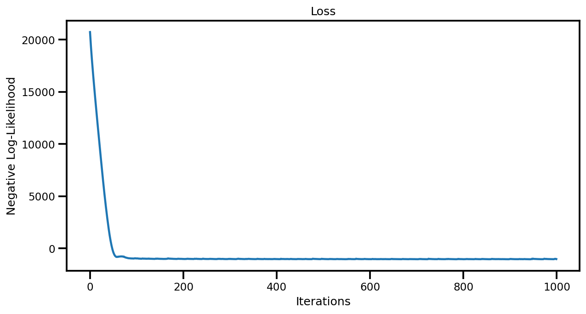
from pprint import pprint
# Take them directly
learned_params = svi_results.params
if inference != "mll":
if model == "sparse":
x_u = learned_params["x_u"]
learned_params = guide.median(learned_params)
learned_params["x_u"] = x_u
else:
raise ValueError(f"Unrecognized model: {model}")
pprint(learned_params)
{'length_scale': DeviceArray([ 1.2764614, 2.1595833, 2.4727066, 4.6458516, 1.2399125,
4.3141804, 6.1591544, 3.487235 , 12.785561 , 5.9348617], dtype=float32),
'obs_noise': DeviceArray(0.03940251, dtype=float32),
'variance': DeviceArray(0.4322504, dtype=float32),
'x_u': DeviceArray([[-0.8761403 , 0.334639 , -0.44769186, ..., -0.3396495 ,
1.4023722 , -0.07844537],
[-0.00868907, -0.01819316, -0.9680677 , ..., 0.3937259 ,
-0.56424356, -3.0674477 ],
[ 0.26320952, -0.79441476, -0.99029166, ..., -0.33097503,
0.3370863 , -0.9201124 ],
...,
[-1.2377547 , 0.14254276, 0.52404815, ..., -0.65687984,
0.7327106 , -0.27722633],
[ 0.5449883 , -0.15223706, 0.4574322 , ..., 0.09861249,
-0.7891802 , 0.49333993],
[-1.1576829 , 0.91372174, -1.57632 , ..., -1.1326851 ,
1.248431 , -0.07134033]], dtype=float32)}
Predictions#
if model == "sparse":
from src.sparse import init_sgp_predictive
gp_pred = init_sgp_predictive(RBF, learned_params, X_scaled, y_scaled, jitter=1e-5)
elif model == "exact":
from src.exact import init_gp_predictive
gp_pred = init_gp_predictive(RBF, learned_params, X_scaled, y_scaled, jitter=0.0)
else:
raise ValueError(f"Unrecognized model: {model}")
mu = gp_pred.predict_mean(jnp.array(X_scaled))
Uncertain Predictions#
from src.uncertain.monte_carlo import MCTransform
from sr
File "<ipython-input-35-d9ac4395956e>", line 2
from sr
^
SyntaxError: invalid syntax
def init_egp_predictors(input_cov, gp_model, egp_model_name="mc", **kwargs):
n_features = gp_model.kernel.length_scale.shape[0]
if egp_model_name == "mc":
from src.uncertain.monte_carlo import MCTransform
key = jax.random.PRNGKey(kwargs.get("seed",123))
egp_pred_mc = MCTransform(
gp_model,
cov_type="diag",
**kwargs
)
pred_f = jax.partial(
egp_pred_mc.predict_f,
key=key,
full_covariance=False,
x_cov=jnp.array(np.sqrt(np.diag(input_cov)))
)
pred_f = jax.jit(pred_f)
elif egp_model_name == "unc":
from src.uncertain.unscented import UnscentedTransform
egp_pred_mc = UnscentedTransform(
gp_model,
n_features=n_features,
**kwargs
)
pred_f = jax.partial(
egp_pred_mc.predict_f,
full_covariance=False,
x_cov=jnp.array(np.diag(np.diag(input_cov)))
)
pred_f = jax.jit(pred_f)
elif egp_model_name == "to1":
from src.uncertain.taylor import TaylorO1Transform
egp_pred = TaylorO1Transform(gp_model)
pred_f = jax.partial(
egp_pred.predict_f,
full_covariance=False,
x_cov=jnp.array(input_cov)
)
pred_f = jax.jit(pred_f)
elif egp_model_name == "to2":
from src.uncertain.taylor import TaylorO2Transform
egp_pred = TaylorO2Transform(gp_model)
pred_f = jax.partial(
egp_pred.predict_f,
full_covariance=False,
x_cov=jnp.array(input_cov)
)
pred_f = jax.jit(pred_f)
elif egp_model_name == "gh":
from src.uncertain.quadrature import init_gausshermite_transform
egp_pred = init_gausshermite_transform(
gp_model,
n_features=n_features,
**kwargs
)
pred_f = jax.partial(
egp_pred.predict_f,
full_covariance=False,
x_cov=jnp.array(np.diag(np.diag(input_cov)))
)
pred_f = jax.jit(pred_f)
else:
raise ValueError(f"Unrecognized model: {egp_model_name}")
return pred_f
def predict_in_batches(Xtest, pred_f, batch_size=5_000, error=True, transform=None):
n_batches = max(int(Xtest.shape[0] / batch_size), 1)
mus, stds = [], []
with tqdm(np.array_split(Xtest, n_batches), leave=False) as pbar:
for X_batch in pbar:
if transform is not None:
X_batch = transform(X_batch)
if error:
mu_, var_ = pred_f(x=X_batch)
else:
mu_, var_ = pred_f(X_batch)
mus.append(mu_)
stds.append(np.sqrt(var_))
# concatenate
mus = np.concatenate(mus, axis=0)
stds = np.concatenate(stds, axis=0)
return mus, stds
egp_pred_f_mc = init_egp_predictors(input_cov_scaled, gp_pred, "mc", n_samples=100)
egp_pred_f_unc = init_egp_predictors(input_cov_scaled, gp_pred, "unc", )
egp_pred_f_to1 = init_egp_predictors(input_cov_scaled, gp_pred, "to1",)
egp_pred_f_to2 = init_egp_predictors(input_cov_scaled, gp_pred, "to2",)
mu, var = egp_pred_f_mc(x=jnp.array(X_scaled[:100]))
mu.min()
DeviceArray(-0.68403846, dtype=float32)
Visualization#
from src.utils import predict_in_batches
from src.plots import plot_all_uncertainty
Standard GP#
mu, var = predict_in_batches(X_scaled, gp_pred.predict_y, batch_size=100, error=False, notebook=True)
# mu, var = gp_pred.predict_y(jnp.array(X_scaled[:100]))
fig, ax = plt.subplots(figsize=(5, 5))
ax.scatter(mu, y_scaled, alpha=0.1, c="blue")
ax.set(xlabel="Predictions", ylabel="Truth", title="Training Data")
plt.show()
plot_all_uncertainty(y_pred=mu, y_var=var, y_true=y_scaled, model="standard", data="train")
Lims is None. Setting lims now:
min_max_true: (-3.513445228178408, 1.5504420120619948)
min_max_pred: (-3.343474, 1.55882)
lims: (-3.513445228178408, 1.5588200092315674)
lims_ext: (-4.020671751919406, 2.066046532972565)
/home/emmanuel/.conda/envs/jax_py38/lib/python3.8/site-packages/seaborn/_decorators.py:36: FutureWarning: Pass the following variables as keyword args: x, y. From version 0.12, the only valid positional argument will be `data`, and passing other arguments without an explicit keyword will result in an error or misinterpretation.
warnings.warn(
/home/emmanuel/.conda/envs/jax_py38/lib/python3.8/site-packages/seaborn/distributions.py:2557: FutureWarning: `distplot` is a deprecated function and will be removed in a future version. Please adapt your code to use either `displot` (a figure-level function with similar flexibility) or `histplot` (an axes-level function for histograms).
warnings.warn(msg, FutureWarning)
MC Sampling#
mu, var = predict_in_batches(X_scaled, egp_pred_f_mc, batch_size=100, error=True, notebook=True)
fig, ax = plt.subplots(figsize=(5, 5))
ax.scatter(mu, y_scaled, alpha=0.1, c="blue")
ax.set(xlabel="Predictions", ylabel="Truth", title="Training Data")
plt.show()
plot_all_uncertainty(y_pred=mu, y_var=var, y_true=y_scaled, model="mc", data="train")
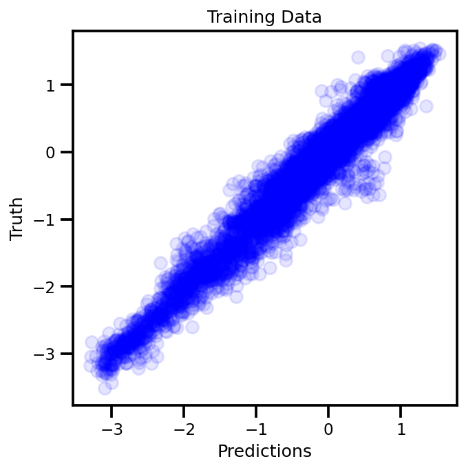
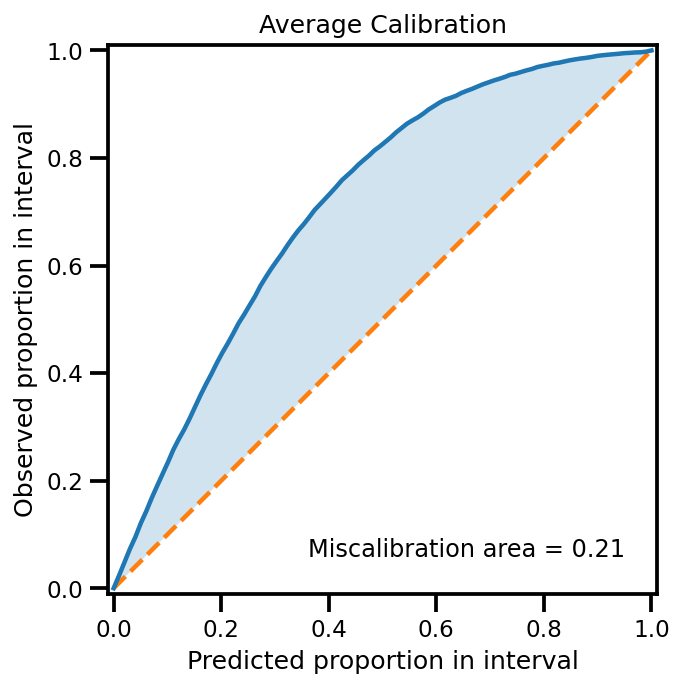
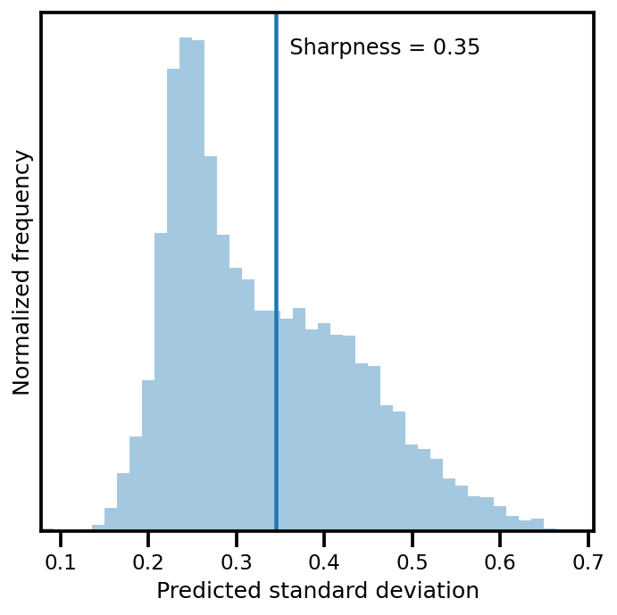
Lims is None. Setting lims now:
min_max_true: (-3.513445228178408, 1.5504420120619948)
min_max_pred: (-3.2986484, 1.53116)
lims: (-3.513445228178408, 1.5504420120619948)
lims_ext: (-4.019833952202449, 2.0568307360860354)
/home/emmanuel/.conda/envs/jax_py38/lib/python3.8/site-packages/seaborn/_decorators.py:36: FutureWarning: Pass the following variables as keyword args: x, y. From version 0.12, the only valid positional argument will be `data`, and passing other arguments without an explicit keyword will result in an error or misinterpretation.
warnings.warn(
/home/emmanuel/.conda/envs/jax_py38/lib/python3.8/site-packages/seaborn/distributions.py:2557: FutureWarning: `distplot` is a deprecated function and will be removed in a future version. Please adapt your code to use either `displot` (a figure-level function with similar flexibility) or `histplot` (an axes-level function for histograms).
warnings.warn(msg, FutureWarning)
Unscented Transform#
mu, var = predict_in_batches(X_scaled, egp_pred_f_unc, batch_size=100, error=True, notebook=True)
fig, ax = plt.subplots(figsize=(5, 5))
ax.scatter(mu, y_scaled, alpha=0.1, c="blue")
ax.set(xlabel="Predictions", ylabel="Truth", title="Training Data")
plt.show()
plot_all_uncertainty(y_pred=mu, y_var=var, y_true=y_scaled, model="unc", data="train")
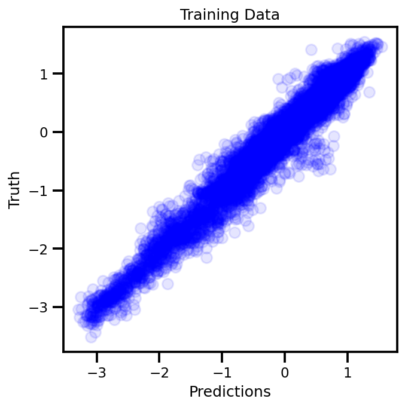
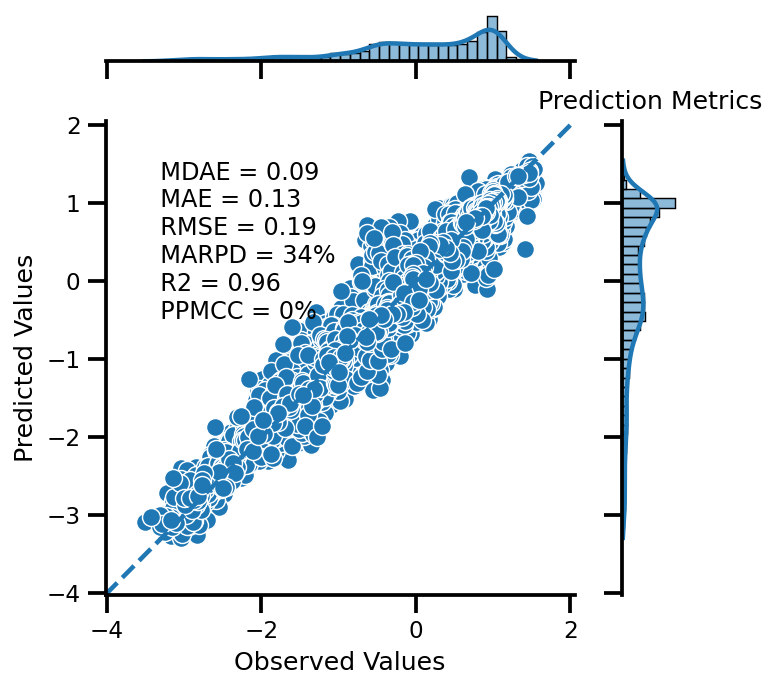
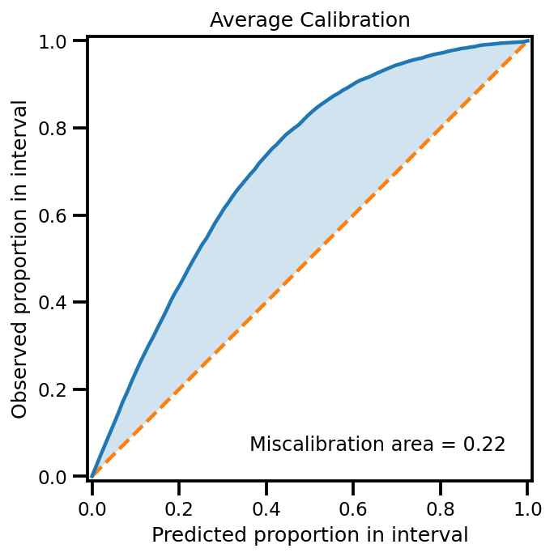
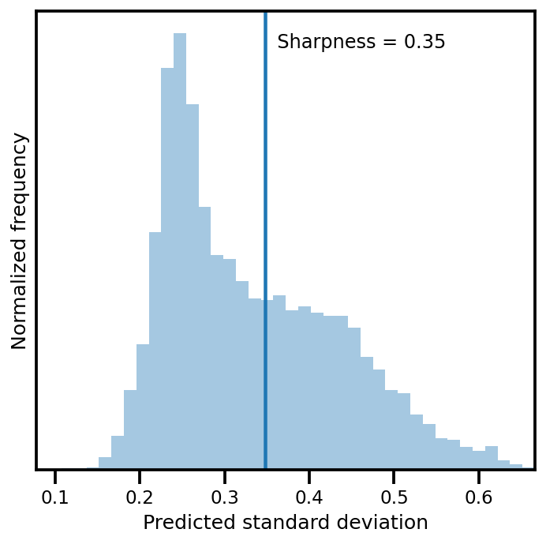
Lims is None. Setting lims now:
min_max_true: (-3.513445228178408, 1.5504420120619948)
min_max_pred: (-3.2918162, 1.5429592)
lims: (-3.513445228178408, 1.5504420120619948)
lims_ext: (-4.019833952202449, 2.0568307360860354)
/home/emmanuel/.conda/envs/jax_py38/lib/python3.8/site-packages/seaborn/_decorators.py:36: FutureWarning: Pass the following variables as keyword args: x, y. From version 0.12, the only valid positional argument will be `data`, and passing other arguments without an explicit keyword will result in an error or misinterpretation.
warnings.warn(
/home/emmanuel/.conda/envs/jax_py38/lib/python3.8/site-packages/seaborn/distributions.py:2557: FutureWarning: `distplot` is a deprecated function and will be removed in a future version. Please adapt your code to use either `displot` (a figure-level function with similar flexibility) or `histplot` (an axes-level function for histograms).
warnings.warn(msg, FutureWarning)
Taylor Expansion (1st Order)#
mu, var = predict_in_batches(X_scaled, egp_pred_f_to1, batch_size=100, error=True, notebook=True)
fig, ax = plt.subplots(figsize=(5, 5))
ax.scatter(mu, y_scaled, alpha=0.1, c="blue")
ax.set(xlabel="Predictions", ylabel="Truth", title="Training Data")
plt.show()
plot_all_uncertainty(y_pred=mu, y_var=var, y_true=y_scaled, model="to1", data="train")
Lims is None. Setting lims now:
min_max_true: (-3.513445228178408, 1.5504420120619948)
min_max_pred: (-3.3434722, 1.5588082)
lims: (-3.513445228178408, 1.5588082075119019)
lims_ext: (-4.02067057174744, 2.066033551080933)
/home/emmanuel/.conda/envs/jax_py38/lib/python3.8/site-packages/seaborn/_decorators.py:36: FutureWarning: Pass the following variables as keyword args: x, y. From version 0.12, the only valid positional argument will be `data`, and passing other arguments without an explicit keyword will result in an error or misinterpretation.
warnings.warn(
/home/emmanuel/.conda/envs/jax_py38/lib/python3.8/site-packages/seaborn/distributions.py:2557: FutureWarning: `distplot` is a deprecated function and will be removed in a future version. Please adapt your code to use either `displot` (a figure-level function with similar flexibility) or `histplot` (an axes-level function for histograms).
warnings.warn(msg, FutureWarning)
Taylor Expansion (2nd Order)#
egp_pred_f_to2 = init_egp_predictors(input_cov_scaled, gp_pred, "to2",)
mu, var = predict_in_batches(X_scaled, egp_pred_f_to2, batch_size=100, error=True, notebook=True)
fig, ax = plt.subplots(figsize=(5, 5))
ax.scatter(mu, y_scaled, alpha=0.1, c="blue")
ax.set(xlabel="Predictions", ylabel="Truth", title="Training Data")
plt.show()
plot_all_uncertainty(y_pred=mu, y_var=var, y_true=y_scaled, model="to2", data="train")
Lims is None. Setting lims now:
min_max_true: (-3.513445228178408, 1.5504420120619948)
min_max_pred: (-3.2908297, 1.5427144)
lims: (-3.513445228178408, 1.5504420120619948)
lims_ext: (-4.019833952202449, 2.0568307360860354)
/home/emmanuel/.conda/envs/jax_py38/lib/python3.8/site-packages/seaborn/_decorators.py:36: FutureWarning: Pass the following variables as keyword args: x, y. From version 0.12, the only valid positional argument will be `data`, and passing other arguments without an explicit keyword will result in an error or misinterpretation.
warnings.warn(
/home/emmanuel/.conda/envs/jax_py38/lib/python3.8/site-packages/seaborn/distributions.py:2557: FutureWarning: `distplot` is a deprecated function and will be removed in a future version. Please adapt your code to use either `displot` (a figure-level function with similar flexibility) or `histplot` (an axes-level function for histograms).
warnings.warn(msg, FutureWarning)
def rescale_x_data(Xtest):
# inverse PCA transform
Xtest = pca_scaler.transform(Xtest)
return Xtest
def rescale_y_data(ytest):
ytest = ytest[:, -1].reshape(-1, 1)
return y_transformer.transform(ytest)
def select_toa(y):
y = y[:, -1].reshape(-1, 1)
return y
def create_result_df(true, mus, stds, lats, lons, model):
true = true.squeeze()
mus = mus.squeeze()
stds = stds.squeeze()
lats = lats.squeeze()
lons = lons.squeeze()
n_points = lon.shape[0]
# create dataframe
df = pd.DataFrame({"latitude": lats, "longitude": lons, "true": true, "mus": mus, "stds": stds, "model": n_points * [model]})
# set index
df = df.set_index(["latitude", "longitude", "model"])
return df
Test Data#
from tqdm.notebook import tqdm
from src.utils import rescale_data
%%time
import numpy as np
radiances_test = []
temperatures_test = []
temperatures_mu = []
temperatures_std = []
latitudes_test = []
longitudes_test = []
results_df = pd.DataFrame()
with tqdm(list(zip(orbits.values, seeds))) as pbar:
for iorbit, iseed in pbar:
pbar.set_description(f"Orbit: {iorbit[0]} | Loading Radiances...")
Xtest = load_radiances(orbit=iorbit[0], subsample=None, clean=True, random_state=None)
Xtest = rescale_data(Xtest, pca_scaler.transform)
pbar.set_description(f"Orbit: {iorbit[0]} | Loading Temperatures...")
labels = load_labels(orbit=iorbit[0], label="T", subsample=None, random_state=None)
labels = rescale_data(labels, select_toa)
labels = rescale_data(labels, y_transformer.transform)
pbar.set_description(f"Orbit: {iorbit[0]} | Loading Coordinates...")
lon, lat = load_coordinates(orbit=iorbit[0], subsample=None, random_state=None)
# Predictions (Standard)
pbar.set_description(f"Orbit: {iorbit[0]} | Predicting (Standard GP)...")
mus, stds = predict_in_batches(Xtest, gp_pred.predict_y, batch_size=5_000, error=False, transform=None, notebook=True)
df = create_result_df(
labels,
mus,
stds,
lat,
lon,
"standard"
)
results_df = results_df.append(df)
# Predictions (Unscented)
pbar.set_description(f"Orbit: {iorbit[0]} | Predicting (Unscented GP)...")
mus, stds = predict_in_batches(Xtest, egp_pred_f_unc, batch_size=1_000, error=True, transform=None, notebook=True)
df = create_result_df(
labels,
mus,
stds,
lat,
lon,
"unc"
)
results_df = results_df.append(df)
# Predictions (Taylor, O1)
pbar.set_description(f"Orbit: {iorbit[0]} | Predicting (Taylor GP, o1)...")
mus, stds = predict_in_batches(Xtest, egp_pred_f_to1, batch_size=1_000, error=True, transform=None, notebook=True)
df = create_result_df(
labels,
mus,
stds,
lat,
lon,
"taylor1"
)
results_df = results_df.append(df)
# Predictions (Taylor, O2)
pbar.set_description(f"Orbit: {iorbit[0]} | Predicting (Taylor GP, o2)...")
mus, stds = predict_in_batches(Xtest, egp_pred_f_to2, batch_size=1_000, error=True, transform=None, notebook=True)
df = create_result_df(
labels,
mus,
stds,
lat,
lon,
"taylor2"
)
results_df = results_df.append(df)
# Predictions (MC)
pbar.set_description(f"Orbit: {iorbit[0]} | Predicting (MC GP)...")
mus, stds = predict_in_batches(Xtest, egp_pred_f_mc, batch_size=100, error=True, transform=None, notebook=True)
df = create_result_df(
labels,
mus,
stds,
lat,
lon,
"mc"
)
results_df = results_df.append(df)
results_df = results_df.groupby(level=results_df.index.names).mean()
CPU times: user 5h 53min 20s, sys: 14h 6min 23s, total: 19h 59min 43s
Wall time: 53min 8s
y_transformer.mean_, y_transformer.scale_
(array([281.01824408]), array([17.93046473]))
results_df = results_df.groupby(level=results_df.index.names).mean()
results_xr = results_df.to_xarray()
results_xr
<xarray.Dataset>
Dimensions: (latitude: 359, longitude: 720, model: 5)
Coordinates:
* latitude (latitude) float64 -89.5 -89.0 -88.5 -88.0 ... 88.5 89.0 89.5
* longitude (longitude) float64 -179.5 -179.0 -178.5 ... 179.0 179.5 180.0
* model (model) object 'mc' 'standard' 'taylor1' 'taylor2' 'unc'
Data variables:
true (latitude, longitude, model) float64 nan nan nan ... nan nan nan
mus (latitude, longitude, model) float32 nan nan nan ... nan nan nan
stds (latitude, longitude, model) float32 nan nan nan ... nan nan nanxarray.Dataset
- latitude: 359
- longitude: 720
- model: 5
- latitude(latitude)float64-89.5 -89.0 -88.5 ... 89.0 89.5
array([-89.5, -89. , -88.5, ..., 88.5, 89. , 89.5])
- longitude(longitude)float64-179.5 -179.0 ... 179.5 180.0
array([-179.5, -179. , -178.5, ..., 179. , 179.5, 180. ])
- model(model)object'mc' 'standard' ... 'taylor2' 'unc'
array(['mc', 'standard', 'taylor1', 'taylor2', 'unc'], dtype=object)
- true(latitude, longitude, model)float64nan nan nan nan ... nan nan nan nan
array([[[nan, nan, nan, nan, nan], [nan, nan, nan, nan, nan], [nan, nan, nan, nan, nan], ..., [nan, nan, nan, nan, nan], [nan, nan, nan, nan, nan], [nan, nan, nan, nan, nan]], [[nan, nan, nan, nan, nan], [nan, nan, nan, nan, nan], [nan, nan, nan, nan, nan], ..., [nan, nan, nan, nan, nan], [nan, nan, nan, nan, nan], [nan, nan, nan, nan, nan]], [[nan, nan, nan, nan, nan], [nan, nan, nan, nan, nan], [nan, nan, nan, nan, nan], ..., ... ..., [nan, nan, nan, nan, nan], [nan, nan, nan, nan, nan], [nan, nan, nan, nan, nan]], [[nan, nan, nan, nan, nan], [nan, nan, nan, nan, nan], [nan, nan, nan, nan, nan], ..., [nan, nan, nan, nan, nan], [nan, nan, nan, nan, nan], [nan, nan, nan, nan, nan]], [[nan, nan, nan, nan, nan], [nan, nan, nan, nan, nan], [nan, nan, nan, nan, nan], ..., [nan, nan, nan, nan, nan], [nan, nan, nan, nan, nan], [nan, nan, nan, nan, nan]]]) - mus(latitude, longitude, model)float32nan nan nan nan ... nan nan nan nan
array([[[nan, nan, nan, nan, nan], [nan, nan, nan, nan, nan], [nan, nan, nan, nan, nan], ..., [nan, nan, nan, nan, nan], [nan, nan, nan, nan, nan], [nan, nan, nan, nan, nan]], [[nan, nan, nan, nan, nan], [nan, nan, nan, nan, nan], [nan, nan, nan, nan, nan], ..., [nan, nan, nan, nan, nan], [nan, nan, nan, nan, nan], [nan, nan, nan, nan, nan]], [[nan, nan, nan, nan, nan], [nan, nan, nan, nan, nan], [nan, nan, nan, nan, nan], ..., ... ..., [nan, nan, nan, nan, nan], [nan, nan, nan, nan, nan], [nan, nan, nan, nan, nan]], [[nan, nan, nan, nan, nan], [nan, nan, nan, nan, nan], [nan, nan, nan, nan, nan], ..., [nan, nan, nan, nan, nan], [nan, nan, nan, nan, nan], [nan, nan, nan, nan, nan]], [[nan, nan, nan, nan, nan], [nan, nan, nan, nan, nan], [nan, nan, nan, nan, nan], ..., [nan, nan, nan, nan, nan], [nan, nan, nan, nan, nan], [nan, nan, nan, nan, nan]]], dtype=float32) - stds(latitude, longitude, model)float32nan nan nan nan ... nan nan nan nan
array([[[nan, nan, nan, nan, nan], [nan, nan, nan, nan, nan], [nan, nan, nan, nan, nan], ..., [nan, nan, nan, nan, nan], [nan, nan, nan, nan, nan], [nan, nan, nan, nan, nan]], [[nan, nan, nan, nan, nan], [nan, nan, nan, nan, nan], [nan, nan, nan, nan, nan], ..., [nan, nan, nan, nan, nan], [nan, nan, nan, nan, nan], [nan, nan, nan, nan, nan]], [[nan, nan, nan, nan, nan], [nan, nan, nan, nan, nan], [nan, nan, nan, nan, nan], ..., ... ..., [nan, nan, nan, nan, nan], [nan, nan, nan, nan, nan], [nan, nan, nan, nan, nan]], [[nan, nan, nan, nan, nan], [nan, nan, nan, nan, nan], [nan, nan, nan, nan, nan], ..., [nan, nan, nan, nan, nan], [nan, nan, nan, nan, nan], [nan, nan, nan, nan, nan]], [[nan, nan, nan, nan, nan], [nan, nan, nan, nan, nan], [nan, nan, nan, nan, nan], ..., [nan, nan, nan, nan, nan], [nan, nan, nan, nan, nan], [nan, nan, nan, nan, nan]]], dtype=float32)
fig, ax = plt.subplots()
results_xr.true.sel(model="standard").plot(cmap="RdBu_r", robust=True)
plt.show()
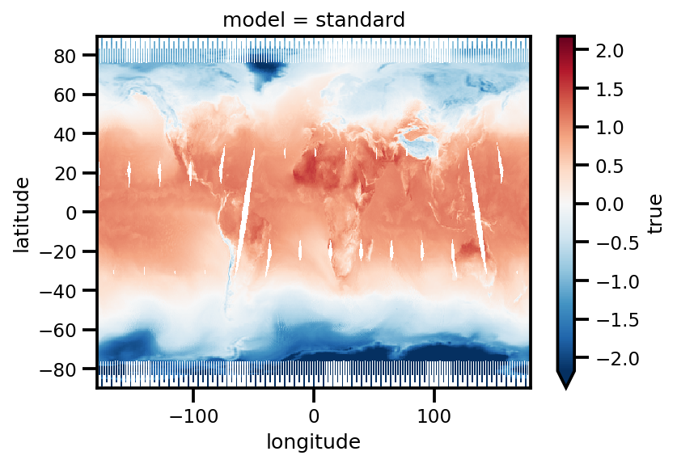
results_xr.sel(model="standard").mus.values = y_transformer.inverse_transform(results_xr.sel(model="standard").mus.values)
results_xr.mus.sel(model="standard").values
array([[nan, nan, nan, ..., nan, nan, nan],
[nan, nan, nan, ..., nan, nan, nan],
[nan, nan, nan, ..., nan, nan, nan],
...,
[nan, nan, nan, ..., nan, nan, nan],
[nan, nan, nan, ..., nan, nan, nan],
[nan, nan, nan, ..., nan, nan, nan]], dtype=float32)
import cartopy.crs as ccrs
def plot_mean_maps(data):
transform = ccrs.Robinson()
fig = plt.figure(figsize=(7, 5))
ax = fig.add_subplot(111, projection=transform)
data.plot.pcolormesh(
ax=ax, cmap="RdBu_r", robust=True, label=None ,
transform=ccrs.PlateCarree(),
cbar_kwargs={'orientation': 'horizontal',
'pad': 0.05, 'label': ''}
)
ax.set(title="")
ax.coastlines()
return fig, ax
def rescale_xr_labels(data, scaler):
data = scaler.scale_ * data + scaler.mean_
data = data - 273.15
return data
dat = results_xr.mus.sel(model="standard")
dat = rescale_xr_labels(dat, y_transformer)
fig, ax = plot_mean_maps(dat)
plt.gcf()
wandb.log({f"maps_mu_true": wandb.Image(plt)})
for imodel in ["standard", "mc", "unc", "taylor1"]:
# STANDARD
dat = results_xr.mus.sel(model=imodel)
dat = rescale_xr_labels(dat, y_transformer)
fig, ax = plot_mean_maps(dat)
plt.gcf()
wandb.log({f"maps_mu_{imodel}": wandb.Image(plt)})
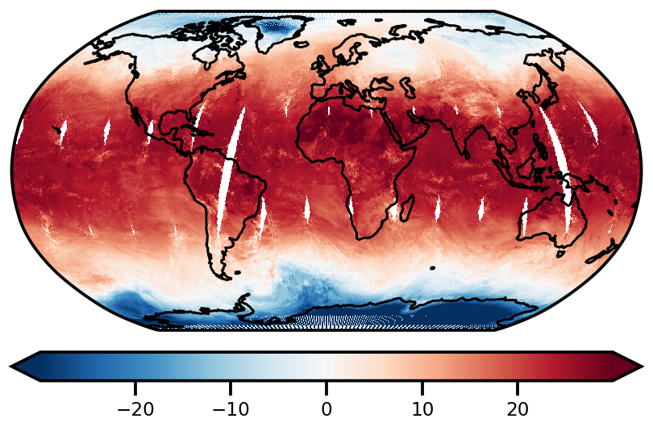
MAE Maps#
import cartopy.crs as ccrs
def plot_error_maps(data, **kwargs):
transform = ccrs.Robinson()
fig = plt.figure(figsize=(7, 5))
ax = fig.add_subplot(111, projection=transform)
data.plot.pcolormesh(
ax=ax, cmap="Reds", robust=True, label=None,
transform=ccrs.PlateCarree(),
cbar_kwargs={'orientation': 'horizontal',
'pad': 0.05, 'label': ''},
**kwargs
)
ax.set(title="")
ax.coastlines()
return fig, ax
def calculate_error(pred, true):
return np.abs(pred - true)
# TRUE
xr_true = results_xr.true.sel(model="standard")
xr_true = rescale_xr_labels(xr_true, y_transformer)
for imodel in ["standard", "mc", "unc", "taylor1", "taylor2"]:
# STANDARD
xr_pred = results_xr.mus.sel(model=imodel)
xr_pred = rescale_xr_labels(xr_pred, y_transformer)
xr_abs_err = calculate_error(xr_pred,xr_true)
fig, ax = plot_error_maps(xr_abs_err)
plt.gcf()
wandb.log({f"maps_mae_{imodel}": wandb.Image(plt)})
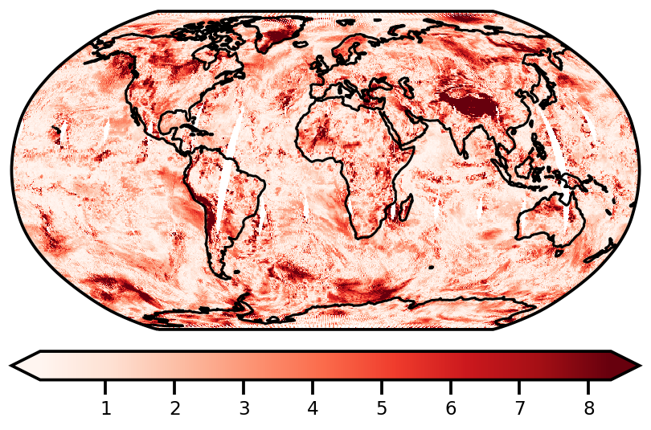
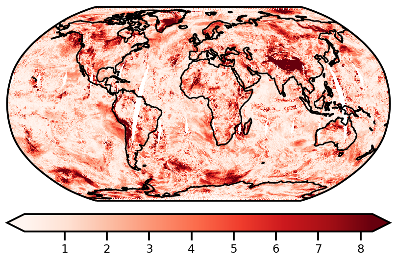
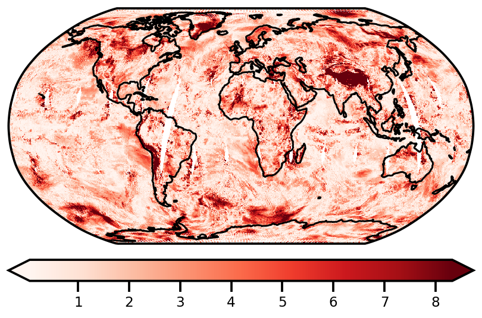
Standard Deviation#
def rescale_xr_labels_std(data, scaler):
data = scaler.scale_ * data
return data
for imodel in ["standard", "mc", "unc", "taylor1", "taylor2"]:
# STANDARD
xr_pred = results_xr.stds.sel(model=imodel)
xr_pred = rescale_xr_labels_std(xr_pred, y_transformer)
fig, ax = plot_error_maps(xr_pred)
plt.gcf()
wandb.log({f"maps_stds_{imodel}": wandb.Image(plt)})
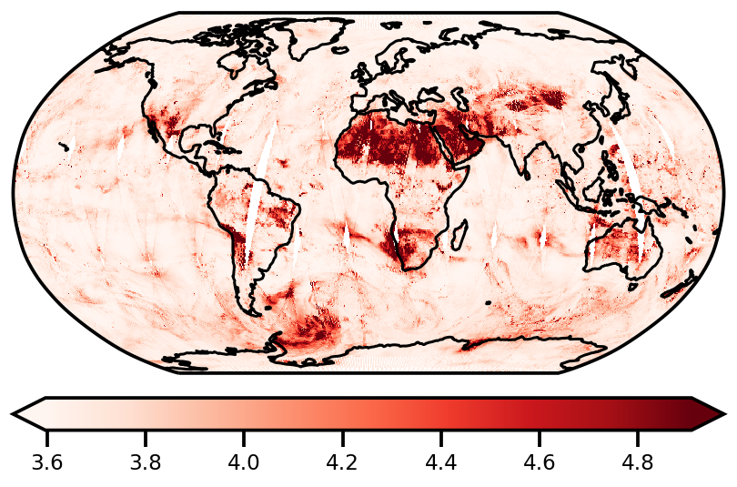
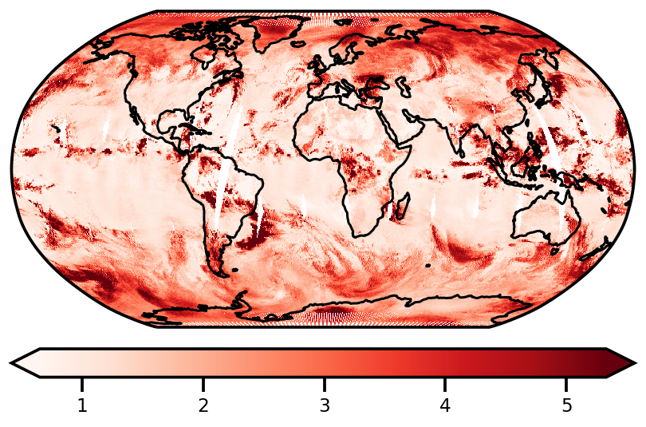
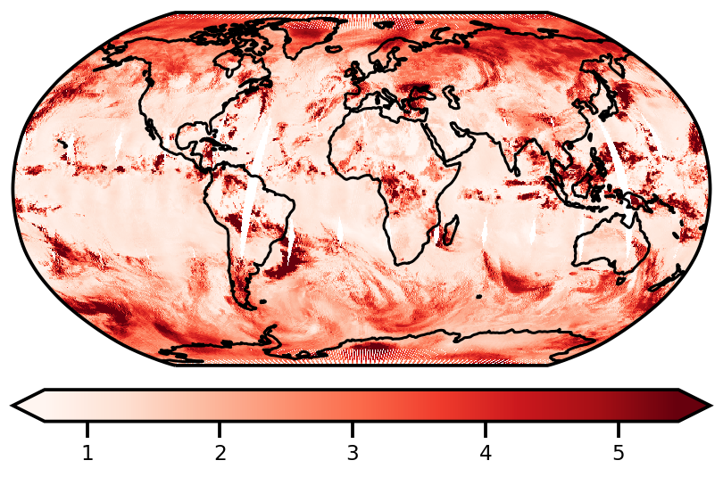
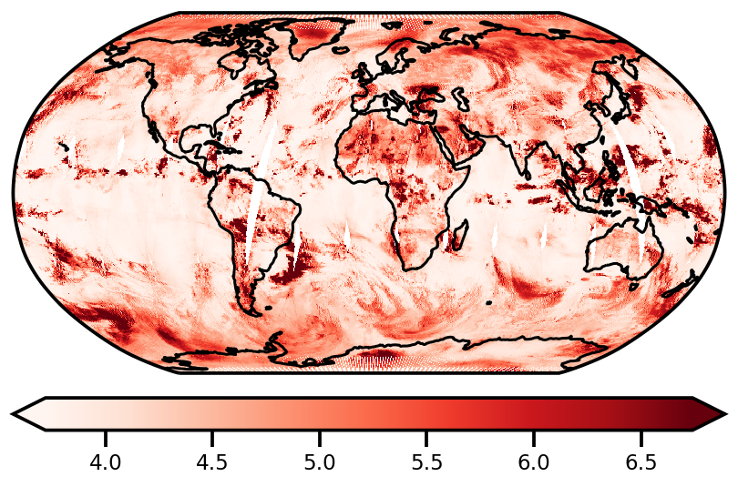
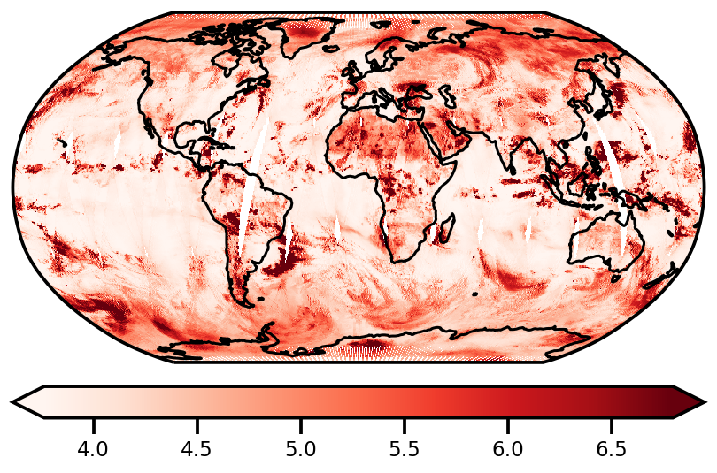
Calibration#
results_df.loc[:, :, "standard"].head()
| true | mus | stds | ||
|---|---|---|---|---|
| latitude | longitude | |||
| -89.5 | -168.0 | -3.165005 | -3.176624 | 0.208132 |
| -152.0 | -3.144823 | -3.156960 | 0.206091 | |
| -136.0 | -3.153855 | -3.117788 | 0.206926 | |
| -120.0 | -3.125770 | -3.146023 | 0.206359 | |
| -104.0 | -3.104127 | -3.187489 | 0.206533 |
for imodel in ["standard", "mc", "unc", "taylor1", "taylor2"]:
plot_all_uncertainty(
results_df.loc[:, :, imodel].mus.values,
results_df.loc[:, :, imodel].stds.values,
results_df.loc[:, :, imodel].true.values,
model=imodel, data="real", log=True
)
Lims is None. Setting lims now:
min_max_true: (-3.527917015966839, 1.5959772113671293)
min_max_pred: (-3.228819, 1.6727796)
lims: (-3.527917015966839, 1.6727795600891113)
lims_ext: (-4.047986673572434, 2.1928492176947065)
/home/emmanuel/.conda/envs/jax_py38/lib/python3.8/site-packages/seaborn/_decorators.py:36: FutureWarning: Pass the following variables as keyword args: x, y. From version 0.12, the only valid positional argument will be `data`, and passing other arguments without an explicit keyword will result in an error or misinterpretation.
warnings.warn(
/home/emmanuel/.conda/envs/jax_py38/lib/python3.8/site-packages/seaborn/distributions.py:2557: FutureWarning: `distplot` is a deprecated function and will be removed in a future version. Please adapt your code to use either `displot` (a figure-level function with similar flexibility) or `histplot` (an axes-level function for histograms).
warnings.warn(msg, FutureWarning)

Lims is None. Setting lims now:
min_max_true: (-3.527917015966839, 1.5959772113671293)
min_max_pred: (-3.1827378, 1.661654)
lims: (-3.527917015966839, 1.661653995513916)
lims_ext: (-4.046874117114914, 2.1806110966619916)
/home/emmanuel/.conda/envs/jax_py38/lib/python3.8/site-packages/seaborn/_decorators.py:36: FutureWarning: Pass the following variables as keyword args: x, y. From version 0.12, the only valid positional argument will be `data`, and passing other arguments without an explicit keyword will result in an error or misinterpretation.
warnings.warn(
/home/emmanuel/.conda/envs/jax_py38/lib/python3.8/site-packages/seaborn/distributions.py:2557: FutureWarning: `distplot` is a deprecated function and will be removed in a future version. Please adapt your code to use either `displot` (a figure-level function with similar flexibility) or `histplot` (an axes-level function for histograms).
warnings.warn(msg, FutureWarning)
Lims is None. Setting lims now:
min_max_true: (-3.527917015966839, 1.5959772113671293)
min_max_pred: (-3.1783006, 1.6412063)
lims: (-3.527917015966839, 1.6412062644958496)
lims_ext: (-4.044829344013108, 2.1581185925421185)
/home/emmanuel/.conda/envs/jax_py38/lib/python3.8/site-packages/seaborn/_decorators.py:36: FutureWarning: Pass the following variables as keyword args: x, y. From version 0.12, the only valid positional argument will be `data`, and passing other arguments without an explicit keyword will result in an error or misinterpretation.
warnings.warn(
/home/emmanuel/.conda/envs/jax_py38/lib/python3.8/site-packages/seaborn/distributions.py:2557: FutureWarning: `distplot` is a deprecated function and will be removed in a future version. Please adapt your code to use either `displot` (a figure-level function with similar flexibility) or `histplot` (an axes-level function for histograms).
warnings.warn(msg, FutureWarning)
Lims is None. Setting lims now:
min_max_true: (-3.527917015966839, 1.5959772113671293)
min_max_pred: (-3.2288182, 1.672778)
lims: (-3.527917015966839, 1.6727780103683472)
lims_ext: (-4.047986518600357, 2.192847513001866)
/home/emmanuel/.conda/envs/jax_py38/lib/python3.8/site-packages/seaborn/_decorators.py:36: FutureWarning: Pass the following variables as keyword args: x, y. From version 0.12, the only valid positional argument will be `data`, and passing other arguments without an explicit keyword will result in an error or misinterpretation.
warnings.warn(
/home/emmanuel/.conda/envs/jax_py38/lib/python3.8/site-packages/seaborn/distributions.py:2557: FutureWarning: `distplot` is a deprecated function and will be removed in a future version. Please adapt your code to use either `displot` (a figure-level function with similar flexibility) or `histplot` (an axes-level function for histograms).
warnings.warn(msg, FutureWarning)
Lims is None. Setting lims now:
min_max_true: (-3.527917015966839, 1.5959772113671293)
min_max_pred: (-3.1772356, 1.6397251)
lims: (-3.527917015966839, 1.6397250890731812)
lims_ext: (-4.044681226470841, 2.156489299577183)
/home/emmanuel/.conda/envs/jax_py38/lib/python3.8/site-packages/seaborn/_decorators.py:36: FutureWarning: Pass the following variables as keyword args: x, y. From version 0.12, the only valid positional argument will be `data`, and passing other arguments without an explicit keyword will result in an error or misinterpretation.
warnings.warn(
/home/emmanuel/.conda/envs/jax_py38/lib/python3.8/site-packages/seaborn/distributions.py:2557: FutureWarning: `distplot` is a deprecated function and will be removed in a future version. Please adapt your code to use either `displot` (a figure-level function with similar flexibility) or `histplot` (an axes-level function for histograms).
warnings.warn(msg, FutureWarning)